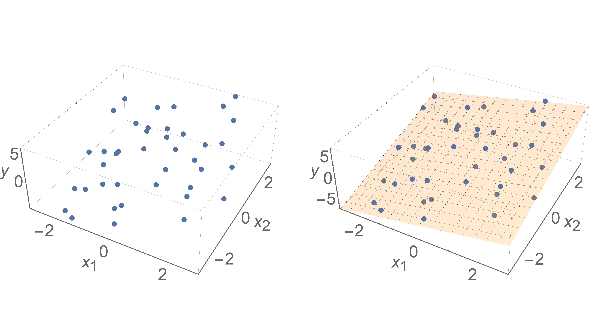

MIT 6.390 Intro to Machine Learning: 2 Regression (Repost)
Reposted from Chapter 2: Regression of the MIT 6.390 Intro to Machine Learning course notes, © Massachusetts Institute of Technology and the 6.390 (formerly 6.036) course staff, licensed under CC BY-NC-SA 4.0. Changes made on 2026-11-20: converted from the course website to Markdown; side notes and boxed notes shown as quotes; links to other chapters point to the original site. This post is shared under the same license.
Regression is an important machine-learning problem that provides a good starting point for diving deeply into the field.
“Regression,” in common parlance, means moving backwards. But this is forward progress!
2.1 Problem formulation
A hypothesis \(h\) is a function that serves as our model for the relationship between inputs and outputs. Concretely, \(h: \mathbb{R}^d \to \mathbb{R}\) maps an input vector \(x\) to a predicted output \(h(x)\), which we hope closely approximates the true output \(y\). \[x \rightarrow \boxed{h} \rightarrow y \;\;,\] where \(x \in \mathbb{R}^d\) (i.e., a length \(d\) column vector of real numbers), and \(y \in \mathbb{R}\) (i.e., a real number).
2.1.1 The regression problem
Regression is a supervised learning problem, in which we are given a training dataset of the form
\[ \mathcal{D}_\text{train}= \left\{\left(x^{(1)}, y^{(1)}\right), \dots, \left(x^{(n)}, y^{(n)}\right)\right\}\;\;,\]
which gives examples of input values \(x^{(i)}\) and the output values \(y^{(i)}\) that should be associated with them. Because \(y\) values are real-valued, our hypotheses will have the form \[h: \mathbb{R}^d \rightarrow \mathbb{R} \;\;.\] This is a good framework when we want to predict a numerical quantity, like height, stock value, etc., rather than to divide the inputs into discrete categories. For example, \(x^{(i)}\) might represent the size of a house and \(y^{(i)}\) its sale price.
Real life rarely gives us vectors of real numbers. The \(x\) we really want to take as input is usually something like a song, image, or person. In that case, we’ll have to define a function \(\phi(x)\) whose range is \(\mathbb{R}^d\), where \(\phi\) represents features of \(x\) (e.g., a person’s height or the amount of bass in a song).
This process of converting our data into a numerical form is often referred to as data pre-processing. Then \(h\) maps \(\phi(x)\) to \(\mathbb{R}\).
In much of the following, we’ll omit explicit mention of \(\phi\) and assume that the \(x^{(i)}\) are in \(\mathbb{R}^d\). However, you should always remember that some additional process was almost surely required to go from the actual input examples to their feature representation. We will discuss features more later in the course.
What makes a hypothesis useful? That it works well on new data—that is, it makes good predictions on examples it hasn’t seen.
However, we don’t know exactly what data this hypothesis might be tested on in the real world. So, we must assume a connection between the training data and testing data. Typically, the assumption is that they are drawn independently from the same probability distribution.
To make this discussion more concrete, we need a loss function to express how unhappy we are when we guess an output \(g = h(x)\) given an input \(x\) for which the desired output was \(y\).
Given a training set \(\mathcal{D}_\text{train}\) and a hypothesis \(h\) with parameters \(\Theta\) (where \(\Theta\) stands for all the parameters in our model), the training error of \(h\) can be defined as the average loss on the training data:
\[ \mathcal{E}_\text{train}(h; \Theta) = \frac{1}{n}\sum_{i=1}^n \mathcal{L}(h(x^{(i)}; \Theta), y^{(i)})\;\;. \tag{2.1}\]
The training error of \(h\) gives us some idea of how well it characterizes the relationship between \(x\) and \(y\) values in our data, but it isn’t the quantity we most care about. What we most care about is test error:
\[ \mathcal{E}_\text{test}(h; \Theta) = \frac{1}{n'}\sum_{i=n+1}^{n+n'} \mathcal{L}(h(x^{(i)}; \Theta), y^{(i)})\;\;, \]
on \(n'\) new examples that were not used in the process of finding the hypothesis.
My favorite analogy is to problem sets. We evaluate a student’s ability to generalize by putting questions on the exam that were not on the homework (training set).
Note
It might be worthwhile to stare at the two errors and think about what’s the difference. Notice that both expressions depend on \(\Theta\), but there is a key distinction: when evaluating the test error, the parameters have already been “picked” or “fixed” by the training process. In other words, \(\Theta\) is no longer a variable to be optimized over—it is a fixed quantity determined during training.
For now, we will try to find a hypothesis with small training error (later, with some added criteria) and try to make some design choices so that it generalizes well to new data, meaning that it also has a small test error.
2.2 Regression as an optimization problem
Given data, a loss function, and a hypothesis class, we need a method for finding a good hypothesis in the class. One of the most general ways to approach this problem is by framing the machine learning problem as an optimization problem. One reason for taking this approach is that there is a rich area of math and algorithms studying and developing efficient methods for solving optimization problems, and lots of very good software implementations of these methods. So, if we can turn our problem into one of these problems, then there will be a lot of work already done for us!
We begin by writing down an objective function \(J(\Theta)\). We often write \(J(\Theta; {\cal D})\) to make clear the dependence on the data \({\cal D}\).
Don’t be too perturbed by the semicolon where you expected to see a comma! It’s a mathematical way of saying that we are mostly interested in this as a function of the arguments before the
;, but we should remember there’s a dependence on the stuff after it as well.
The objective function describes how we feel about possible hypotheses \(\Theta\). We generally look for parameter values \(\Theta\) that minimize the objective function:
\[ \Theta^* = \arg\min_{\Theta} J(\Theta)\;\;. \]
In the most general case, there is not a guarantee that there exists a unique set of parameters which minimize the objective function. However, we will ignore that for now. A very common form for a machine-learning objective is:
\[ J(\Theta) = \left(\frac{1}{n} \sum_{i=1}^n \underbrace{\mathcal{L}(h(x^{(i)}; \Theta), y^{(i)})}_\text{loss}\right) + \underbrace{\lambda} _\text{non-negative constant} {R(\Theta)}. \tag{2.2}\]
The loss measures how unhappy we are about the prediction \(h(x^{(i)}; \Theta)\) for the pair \((x^{(i)}, y^{(i)})\). Minimizing this loss improves prediction accuracy. The regularizer \(R(\Theta)\) is an additional term that encourages the prediction to remain general, and the constant \(\lambda\) adjusts the balance between fitting the training examples and generalizing to unseen examples. We will discuss this balance and the idea of regularization further in Section 2.7.
2.3 Linear regression
To make this discussion more concrete, we need to provide a hypothesis class and a loss function.
We begin by picking a class of hypotheses \(\mathcal{H}\) that might provide a good set of possible models for the relationship between \(x\) and \(y\) in our data. We start with a very simple class of linear hypotheses for regression: \[ y = h(x; \theta, \theta_0) = \theta^T x + \theta_0 \;\;, \tag{2.3}\]
where the model parameters are \(\Theta = (\theta, \theta_0)\). In one dimension (\(d = 1\)), this corresponds to the familiar slope-intercept form \(y = mx + b\) of a line. In two dimensions (\(d = 2\)), this corresponds to a plane. In higher dimensions, this model describes a hyperplane. This hypothesis class is both simple to study and very powerful, and will serve as the basis for many other important techniques (even neural networks!).
For now, our objective in linear regression is to find a hypothesis that goes as close as possible, on average, to all of our training data. We define a loss function to describe how to evaluate the quality of the predictions our hypothesis is making, when compared to the “target” \(y\) values in the data set. The choice of loss function is part of modeling your domain. In the absence of additional information about a regression problem, we typically use squared loss: \[ \mathcal{L}(g, y) = (g - y)^2\;\;, \] where \(g=h(x)\) is our “guess” from the hypothesis, or the hypothesis’ prediction, and \(y\) is the “actual” observation from the data set. With this choice of squared loss, the average loss as generally defined in Equation 2.1 will become the so-called mean squared error (MSE).
Applying the general optimization framework to the linear regression hypothesis class of Equation 2.3 with squared loss and no regularization, our objective is to find values for \(\Theta = (\theta, \theta_0)\) that minimize the MSE: \[ J(\theta, \theta_0) = \frac{1}{n}\sum_{i = 1}^n\left(\theta^Tx^{(i)} + \theta_0 - y^{(i)}\right)^2 \;\;, \tag{2.4}\]
resulting in the solution: \[ \theta^*, \theta_0^* = \arg\min_{\theta, \theta_0} J(\theta,\theta_0)\;\;. \tag{2.5}\]
For one-dimensional data (\(d = 1\)), this corresponds to fitting a line to data. For \(d > 1\), this hypothesis represents a \(d\)-dimensional hyperplane embedded in a \((d + 1)\)-dimensional space (the input dimension plus the \(y\) dimension).
The squared loss penalizes guesses that are too high the same amount as it penalizes guesses that are too low, and has a good mathematical justification in the case that your data are generated from an underlying linear hypothesis with the so-called Gaussian-distributed noise added to the \(y\) values. But there are applications in which other losses would be better, and much of the framework we discuss can be applied to different loss functions, although this one has a form that also makes it particularly computationally convenient.
We won’t get into the details of Gaussian distribution in our class; but it’s one of the most important distributions and well-worth studying closely at some point. One obvious fact about Gaussian is that it’s symmetric; this is in fact one of the reasons squared loss works well under Gaussian settings, as the loss is also symmetric.
For example, in the left plot below, we can see data points with labels \(y\) and input dimensions \(x_1\) and \(x_2\). In the right plot below, we see the result of fitting these points with a two-dimensional plane that resides in three dimensions. We interpret the plane as representing a function that provides a \(y\) value for any input \((x_1, x_2)\).

A richer class of hypotheses can be obtained by performing a non-linear feature transformation before doing the regression, as we will later see, but it will still end up that we have to solve a linear regression problem.
2.4 A gloriously simple linear regression algorithm
Okay! Given the objective in Equation 2.4, how can we find good values of \(\theta\) and \(\theta_0\)? We’ll study several general-purpose, efficient, interesting algorithms. But before we do that, let’s start with the simplest one we can think of: guess a whole bunch (\(k\)) of different values of \(\theta\) and \(\theta_0\), see which one has the smallest error on the training set, and return it.
This seems kind of silly, but it’s a learning algorithm, and it’s not completely useless.
Study Question: If your data set has \(n\) data points, and the dimension of the \(x\) values is \(d\), what is the size of an individual \({\theta}^{(i)}\)?
Study Question: How do you think increasing the number of guesses \(k\) will change the training error of the resulting hypothesis?
2.5 Analytical solution: ordinary least squares
One very interesting aspect of the problem of finding a linear hypothesis that minimizes mean squared error is that we can find a closed-form formula for the answer! This general problem is often called ordinary least squares (OLS).
Everything is easier to deal with if we first ignore the offset \(\theta_0\). So, suppose for now, we have, simply, \[ y = \theta^T x\;\;. \tag{2.6}\]
This corresponds to a hyperplane that goes through the origin.
In this case, the objective becomes \[J(\theta) = \frac{1}{n}\sum_{i = 1}^n\left(\theta^Tx^{(i)} - y^{(i)}\right)^2 \;\;. \tag{2.7}\]
We approach this just like a minimization problem from calculus homework: take the derivative of \(J\) with respect to \(\theta\), set it to zero, and solve for \(\theta\). There are additional steps required, to check that the resulting \(\theta\) is a minimum (rather than a maximum or an inflection point) but we won’t work through that here. It is possible to approach this problem by:
Finding \(\partial{J}/\partial{\theta_k}\) for \(k\) in \(1, \ldots, d\),
Constructing a set of \(d\) equations of the form \(\partial{J}/\partial{\theta_k} = 0\), and
Solving the system for values of \(\theta_k\).
That works just fine. To get practice for applying techniques like this to more complex problems, we will work through a more compact (and cool!) matrix view. Along the way, it will be helpful to collect all of the derivatives in one vector. In particular, the gradient of \(J\) with respect to \(\theta\) is the following column vector of length \(d\):
\[\nabla_\theta J = \begin{bmatrix} \partial J / \partial \theta_1 \\ \vdots \\ \partial J / \partial \theta_d \end{bmatrix}.\]
Study Question: Work through the next steps and check your answer against ours below.
We can think of our training data in terms of matrices \(X\) and \(Y\), where each row of \(X\) is an example, and each row (or rather, element) of \(Y\) is the corresponding target output value:
\[ X = \begin{bmatrix}x_1^{(1)} & \dots & x_d^{(1)}\\\vdots & \ddots & \vdots\\x_1^{(n)} & \dots & x_d^{(n)}\end{bmatrix} \;\; Y = \begin{bmatrix}y^{(1)}\\\vdots\\y^{(n)}\end{bmatrix} \;\;. \]
Study Question: What are the dimensions of \(X\) and \(Y\)?
Now we can write \[J(\theta) = \frac{1}{n} \sum_{i=1}^n (\theta^T x^{(i)} - y^{(i)})^2 = \frac{1}{n} (X \theta - Y)^T(X \theta - Y),\]
and using facts about matrix/vector calculus, we get
\[ \begin{align*} \nabla_{\theta} J(\theta) &= \frac{1}{n} \nabla_{\theta} \left[ (X \theta)^T X \theta - Y^T X \theta - (X \theta)^T Y + Y^T Y \right] \\ &= \frac{2}{n} \left( X^T X \theta - X^T Y\right). \end{align*} \]
See Appendix A if you need some help finding this gradient.
Setting this equal to zero and solving for \(\theta\) (assuming \(X^TX\) is invertible) yields the final closed-form solution:
\[ \theta^* = \left(X^T X\right)^{-1} X^T Y \tag{2.8}\]
Here are two related alternate angles to view this formula, for intuition’s sake:
Note that \((X^TX)^{-1}X^T =: X^+\) is the pseudo-inverse of \(X\). Thus, \(\theta^*\) “pseudo-solves” \(X\theta=Y\) (multiply both sides of this on the left by \(X^+\)).
Note that \(X(X^TX)^{-1}X^T = \text{proj}_{\text{col}(X)}\) is the projection matrix onto the column space of \(X\). Thus, \(\theta^*\) solves \(X\theta=\text{proj}_{\text{col}(X)}Y\).
and the dimensions work out! So, given our data, we can directly compute the linear regression that minimizes mean squared error. That’s pretty awesome!
This is a very special case where we can find the solution in closed form. In general, we will need to use iterative optimization algorithms to find the best parameters. Also, this process of setting the gradient/derivatives to zero and solving for the parameters works out in this problem. But there can be exceptions to this rule, and we will discuss them later in the course.
Now, how do we deal with the offset? We augment the original feature vector with a “fake” feature of value 1, and add a corresponding parameter \(\theta_0\) to the \(\theta\) vector. That is, we define column vectors \(x_\text{aug}, \theta_\text{aug} \in \mathbb{R}^{d+1}\) such that,
\[ x_{\mathrm{aug}}=\left[\begin{array}{c} x_1 \\ x_2 \\ \vdots \\ x_d \\ 1 \end{array}\right], \quad \theta_{\mathrm{aug}}=\left[\begin{array}{c} \theta_1 \\ \theta_2 \\ \vdots \\ \theta_d \\ \theta_0 \end{array}\right] \]
where the “aug” denotes that \(\theta, x\) have been augmented.
We can now write the linear hypothesis as if there is no offset,
\[ y = h(x_{\text{aug}}; \theta_{\text{aug}}) = \theta_{\text{aug}}^T x_{\text{aug}} \;\; \tag{2.9}\]
But of course, the constant offset is not really gone, it’s just hidden in the augmentation.
We can do this “appending a fake feature of 1” to all data points to form the augmented data matrix \(X_{\text{aug}}\)
\[ X_{\text{aug}}=\left[\begin{array}{cccc}x_1^{(1)} & \ldots & x_d^{(1)} &1 \\ \vdots & \ddots & \vdots & \vdots \\ x_1^{(n)} & \ldots & x_d^{(n)} &1\end{array}\right] = \left[\begin{array}{c}X \quad \mathbb{1} \end{array}\right] \] where \(\mathbb{1}\) is an \(n\)-by-\(1\) vector of all ones. Then use the formula in Equation 2.8 to find the \(\theta_{\text{aug}}\) that minimizes the mean squared error.
Study Question: Stop and prove to yourself that adding that extra feature with value 1 to every input vector and getting rid of the \(\theta_0\) parameter, as done in Equation 2.9 is equivalent to our original model Equation 2.3.
2.6 Centering
The “fake” feature of 1 described above also helps explain an important idea: centering eliminates the need for fitting an intercept explicitly, and thereby offers an alternative way to avoid dealing with \(\theta_0\) directly.
By centering, we mean subtracting the average (mean) of each feature from all data points, and we apply the same operation to the labels. For an example of a dataset before and after centering, see here
The idea is that, with a centered dataset, even if we were to search for an offset term \(\theta_0\), it would naturally fall out to be 0. Intuitively, this makes sense – if a dataset is centered around the origin, it seems natural that the best fitting plane would go through the origin.
Let’s see how this works out mathematically. First, for a centered dataset, two claims immediately follow (recall that \(\mathbb{1}\) is an \(n\)-by-1 vector of all ones):
Each column of \(X\) sums up to zero, that is, \(X^T\mathbb{1} = 0\).
Similarly, the mean of the labels is 0, so \(Y^T\mathbb{1} = \mathbb{1} ^T Y = 0\).
Recall that our ultimate goal is to find an optimal fitting hyperplane, parameterized by \(\theta\) and \(\theta_0\). In other words, we aim to find \(\theta_{\text{aug}},\) which at this point, involves simply plugging \(X_{\text{aug}}=\left[\begin{array}{c}X \quad \mathbb{1} \end{array}\right]\) into Equation 2.8.
\[\begin{aligned} \theta_{\text{aug}}^*&=\left ( \begin{bmatrix} X^T\\\mathbb{1}^T\end{bmatrix}\begin{bmatrix}X&\mathbb{1}\end{bmatrix}\right)^{-1}\begin{bmatrix}X^T\\ \mathbb{1}^T\end{bmatrix}Y\\ &=\begin{bmatrix}X^TX&X^T\mathbb{1}\\\mathbb{1}^TX&\mathbb{1}^T\mathbb{1}\end{bmatrix}^{-1}\begin{bmatrix}X^T\\ \mathbb{1}^T\end{bmatrix}Y\\ &=\begin{bmatrix}X^TX&0\\0&n\end{bmatrix}^{-1}\begin{bmatrix}X^T\\\mathbb{1}^T\end{bmatrix}Y\\ &=\begin{bmatrix}(X^TX)^{-1}X^TY\\\frac{1}{n}\mathbb{1}^TY\end{bmatrix}\\ &=\begin{bmatrix}(X^TX)^{-1}X^TY\\0\end{bmatrix}\\ &=\begin{bmatrix}\theta^*\\\theta_0^*\end{bmatrix}\\ \end{aligned} \]
Indeed, the optimal \(\theta_0\) naturally falls out to be 0.
2.7 Regularization
The objective function of Equation 2.2 balances (training-data) memorization, induced by the loss term, with generalization, induced by the regularization term. Here, we address the need for regularization specifically for linear regression, and show how this can be realized using one popular regularization technique called ridge regression.
2.7.1 Regularization and linear regression
If all we cared about was finding a hypothesis with small loss on the training data, we would have no need for regularization, and could simply omit the second term in the objective. But remember that our ultimate goal is to perform well on input values that we haven’t trained on! It may seem that this is an impossible task, but humans and machine-learning methods do this successfully all the time. What allows generalization to new input values is a belief that there is an underlying regularity that governs both the training and testing data. One way to describe an assumption about such a regularity is by choosing a limited class of possible hypotheses. Another way to do this is to provide smoother guidance, saying that, within a hypothesis class, we prefer some hypotheses to others. The regularizer articulates this preference and the constant \(\lambda\) says how much we are willing to trade off loss on the training data versus preference over hypotheses.
For example, consider what happens when \(d=2,\) and \(x_2\) is highly correlated with \(x_1\), meaning that the data look like a line, as shown in the left panel of the figure below. Thus, there are many hyperplanes that can achieve more or less the same training MSE. Such correlations happen often in real-life data, because of underlying common causes; for example, across a population, age and amount of food intake may themselves be highly correlated. This is especially the case when there are many feature dimensions used in the regression. Mathematically, this leads to \({X}^T{X}\) being close to singular, such that \(({X}^T{X})^{-1}\) is undefined or has huge values, resulting in unstable models (see the middle panel of figure and note the range of the \(y\) values—the slope is huge!):

A common strategy for specifying a regularizer is to use the form \[R(\Theta) = \left\lVert\Theta - \Theta_{\it prior}\right\rVert^2\] when we have some idea in advance that \(\Theta\) ought to be near some value \(\Theta_{\it prior}\).
Here, the notion of distance is quantified by squaring the \(l_2\) norm of the parameter vector: for any \(d\)-dimensional vector \(v \in \mathbb{R}^d,\) the \(l_2\) norm of \(v\) is defined as, \[\|v\| = \sqrt{\sum_{i=1}^d |v_i|^2}\;\;.\] In the absence of such knowledge a default is to regularize toward zero: \[R(\Theta) = \left\lVert\Theta\right\rVert^2\;\;.\] When this is done in the example depicted above, the regression model becomes stable, producing the result shown in the right-hand panel in the figure. Now the slope is much more sensible.
2.7.2 Ridge regression
There are some kinds of trouble we can get into in regression problems. What if \(\left({X}^T{X}\right)\) is not invertible?
Another kind of problem is overfitting: we have formulated an objective that is just about fitting the data as well as possible, but we might also want to regularize to keep the hypothesis from getting too attached to the data.
We address both the problem of not being able to invert \({X}^T{X}\) and the problem of overfitting using a mechanism called ridge regression. We add a regularization term \(\|\theta\|^2\) to the OLS objective, with a non-negative scalar value \(\lambda\) to control the tradeoff between the training error and the regularization term. Here is the ridge regression objective function:
\[ J_{\text{ridge}}(\theta, \theta_0) = \frac{1}{n}\sum_{i = 1}^n\left(\theta^Tx^{(i)} + \theta_0 - y^{(i)}\right)^2 + \lambda\|\theta\|^2 \tag{2.10}\]
Larger \(\lambda\) values pressure \(\theta\) values to be near zero.
Note that, when data isn’t centered, we don’t penalize \(\theta_0\); intuitively, \(\theta_0\) is what “floats” the regression surface to the right level for the data you have, and so we shouldn’t make it harder to fit a data set where the \(y\) values tend to be around one million than one where they tend to be around one. The other parameters control the orientation of the regression surface, and we prefer it to have a not-too-crazy orientation.
There is an analytical expression for the \(\theta, \theta_0\) values that minimize \(J_\text{ridge}\), even when the data isn’t centered, but it’s more complicated to derive than the solution for OLS, even though the process is conceptually similar: taking the gradient, setting it to zero, and solving for the parameters.
The good news is, when the dataset is centered, we again have a very clean setup and derivation. In particular, the objective can be written as:
\[ J_{\text{ridge}}(\theta) = \frac{1}{n}\sum_{i = 1}^n\left(\theta^Tx^{(i)} - y^{(i)}\right)^2 + \lambda\|\theta\|^2 \tag{2.11}\]
Compare Equation 2.10 and Equation 2.11. What is the difference between the two? How is it possible to drop the offset here?
and the solution is: \[ \theta_{\text{ridge}} = \left({X}^T{X}+ n\lambda I\right)^{-1}{X}^T{Y} \tag{2.12}\]
Derivation of the Ridge Regression Solution for Centered Data Set
\[\nabla_{\theta}J_\text{ridge} = \frac{2}{n}{X}^T({X}\theta - {Y}) + 2 \lambda \theta\;\;. \tag{2.13}\]
Setting to 0 and solving, we get: \[\begin{aligned} \frac{2}{n}{X}^T({X}\theta - {Y}) + 2 \lambda \theta & = 0 \\ \frac{1}{n}{X}^T{X}\theta - \frac{1}{n}{X}^T{Y}+ \lambda \theta & = 0 \\ \frac{1}{n}{X}^T{X}\theta + \lambda \theta & = \frac{1}{n}{X}^T{Y}\\ {X}^T{X}\theta + n \lambda \theta & = {X}^T{Y}\\ ({X}^T{X}+ n \lambda I)\theta & = {X}^T{Y}\\ \theta & = ({X}^T{X}+ n \lambda I)^{-1}{X}^T{Y} \end{aligned}\]
One other great news is that in Equation 2.12, the matrix we are trying to invert can always be inverted, as long as \(\lambda > 0\)! Why is the term \(\left({X}^T{X}+ n\lambda I\right)\) invertible? Explaining this requires some linear algebra. The matrix \({X}^T{X}\) is positive semidefinite, which implies that its eigenvalues \(\{\gamma_i\}_i\) are greater than or equal to 0. The matrix \({X}^T{X}+n\lambda I\) has eigenvalues \(\{\gamma_i+n\lambda\}_i\) which are guaranteed to be strictly positive since \(\lambda>0\). Recalling that the determinant of a matrix is simply the product of its eigenvalues, we get that \(\det({X}^T{X}+ n\lambda I)>0\) and conclude that \({X}^T{X}+ n\lambda I\) is invertible.
2.8 Evaluating learning algorithms
In this section, we will explore how to evaluate supervised machine-learning algorithms. We will study the special case of applying them to regression problems, but the basic ideas of validation, hyper-parameter selection, and cross-validation apply much more broadly.
We have seen how linear regression is a well-formed optimization problem, which has an analytical solution when ridge regularization is applied. But how can one choose the best amount of regularization, as parameterized by \(\lambda\)? Two key ideas involve the evaluation of the performance of a hypothesis, and a separate evaluation of the algorithm used to produce hypotheses, as described below.
2.8.1 Evaluating hypotheses
The performance of a given hypothesis \(h\) may be evaluated by measuring test error on data that was not used to train it. Given a training set \(\mathcal{D}_\text{train}\) and a regression hypothesis \(h\), if we choose squared loss, we can define the training error of \(h\) to be the mean square error between its predictions and the target outputs: \[ \begin{aligned} \mathcal{E}_{\text{train}}(h) = \frac{1}{n}\sum_{i = 1}^{n} \left[ h(x^{(i)}) - y^{(i)} \right]^2 \;\;. \end{aligned} \]
Test error captures the performance of \(h\) on unseen data, and is the mean square error on the test set, with a nearly identical expression as that above, differing only in the range of index \(i\): \[\begin{aligned} \mathcal{E}_{\text{test}}(h) = \frac{1}{n'}\sum_{i = n + 1}^{n + n'} \left[ h(x^{(i)}) - y^{(i)} \right]^2 \end{aligned}\] on \(n'\) new examples that were not used in the process of constructing \(h\).
In machine learning in general, not just regression, it is useful to distinguish two ways in which a hypothesis \(h \in {\cal H}\) might contribute to test error. They are:
Structural error: This is error that arises because there is no hypothesis \(h \in {\cal H}\) that will perform well on the data, for example because the data was really generated by a sine wave but we are trying to fit it with a line.
Estimation error: This is error that arises because we do not have enough data (or the data are in some way unhelpful) to allow us to choose a good \(h \in {\cal H}\), or because we didn’t solve the optimization problem well enough to find the best \(h\) given the data that we had.
When we increase \(\lambda\), we tend to increase structural error but decrease estimation error, and vice versa.
2.8.2 Evaluating learning algorithms
Note that this section is relevant to learning algorithms generally—we are just introducing the topic here since we now have an algorithm that can be evaluated!
A learning algorithm is a procedure that takes a data set \(\mathcal{D}_\text{train}\) as input and returns an hypothesis \(h\) from a hypothesis class \({\cal H}\); it looks like \[ \mathcal{D}_{\text{train}} \longrightarrow \boxed{\text{learning alg (${\cal H}$)}} \longrightarrow h\] Keep in mind that \(h\) has parameters. The learning algorithm itself may have its own parameters, and such parameters are often called hyperparameters. The analytical solutions presented above for linear regression, e.g., Equation 2.12, may be thought of as learning algorithms, where \(\lambda\) is a hyperparameter that governs how the learning algorithm works and can strongly affect its performance.
How should we evaluate the performance of a learning algorithm? This can be tricky. There are many potential sources of variability in the possible result of computing test error on a learned hypothesis \(h\):
Which particular training examples occurred in \(\mathcal{D}_{\text{train}}\)
Which particular testing examples occurred in \(\mathcal{D}_{\text{test}}\)
Randomization inside the learning algorithm itself
2.8.2.1 Validation
Generally, to evaluate how well a learning algorithm works, given an unlimited data source, we would like to execute the following process multiple times:
Train on a new training set (subset of our big data source)
Evaluate resulting \(h\) on a validation set that does not overlap the training set (but is still a subset of our same big data source)
Running the algorithm multiple times controls for possible poor choices of training set or unfortunate randomization inside the algorithm itself.
2.8.2.2 Cross validation
One concern is that we might need a lot of data to do this, and in many applications data is expensive or difficult to acquire. We can re-use data with cross validation (but it’s harder to do theoretical analysis).
It’s very important to understand that (cross-)validation neither delivers nor evaluates a single particular hypothesis \(h\). It evaluates the learning algorithm that produces hypotheses.
2.8.2.3 Hyperparameter tuning
The hyper-parameters of a learning algorithm affect how the algorithm works but they are not part of the resulting hypothesis. So, for example, \(\lambda\) in ridge regression affects which hypothesis will be returned, but \(\lambda\) itself doesn’t show up in the hypothesis (the hypothesis is specified using parameters \(\theta\) and \(\theta_0\)).
You can think about each different setting of a hyper-parameter as specifying a different learning algorithm.
In order to pick a good value of the hyper-parameter, we often end up just trying a lot of values and seeing which one works best via validation or cross-validation.
Study Question: How could you use cross-validation to decide whether to use analytic ridge regression or our random-regression algorithm and to pick \(k\) for random regression or \(\lambda\) for ridge regression?